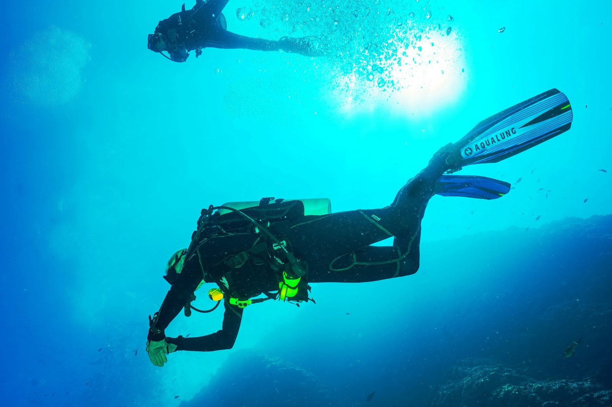
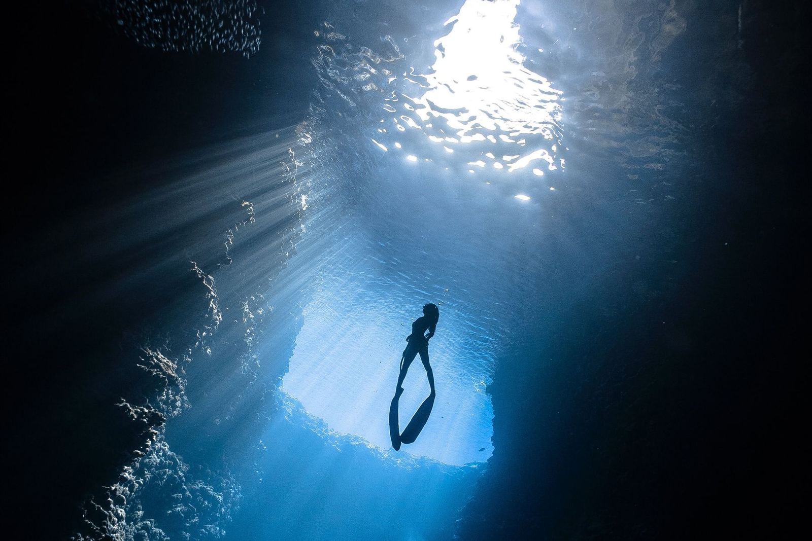

Scuba diving in Pula
Private, guided dives in the clear water of southern Istria, at your level.
- Groups
- Private or small
- Levels
- Beginners to certified
- Equipment
- Provided
- Guides
- Professional
What is down there
The Adriatic around Pula has rocky formations covered in seagrass, small caves and lively marine life: colourful fish, seahorses, sea urchins and, with luck, an octopus in a crevice. We dive in private or small groups, with professional guidance and equipment.

Why dive with us
Small groups
More attention for each diver.
Professional guides
Instructors who know the sites.
Flexible schedule
Dives that fit your holiday.
All levels
Suitable for beginners and experienced divers.
New to diving?
Scuba diving is safe when done properly. Beginners should complete a course with a recognised organisation such as PADI, NAUI or SSI and never dive alone. Never hold your breath underwater, ascend slowly and equalise early. If you have no certificate yet, ask what is possible on your dates.
- Private guided dives
- Small groups
- Beginners and certified divers
- Equipment and guidance provided
Before your dive
Tell us your certification
And your last dive, so we can plan sensibly.
Eat lightly, drink water
Avoid a heavy meal before diving.
Do not fly too soon
Ask us how long to wait after your last dive before a flight.
Frequently asked questions
Can beginners dive with you?
Is equipment included?
Are the dives in small groups?
Why is there no fixed dive price on this page?
Ready to book?
Send us your dates and group size. We check availability and reply within 24 hours.